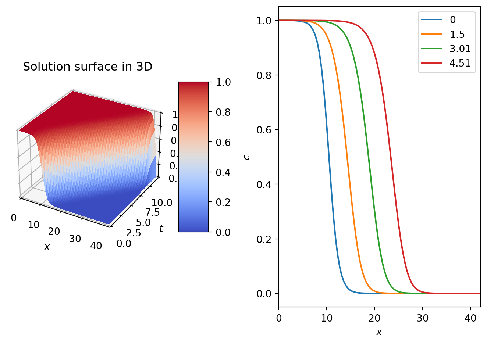
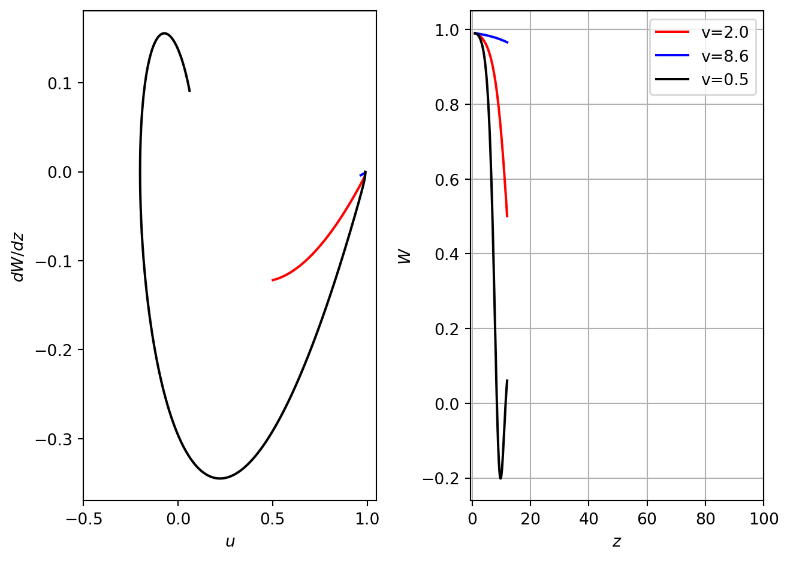
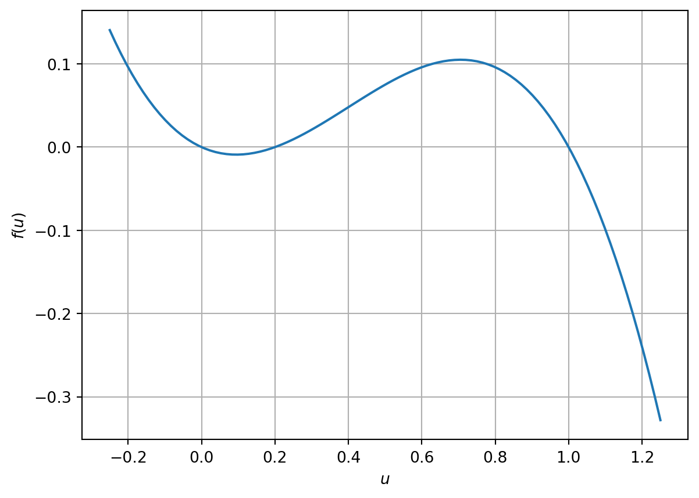

3Travelling waves in nonlinear reaction diffusion equations
Travelling waves
A travelling wave is a solution of a PDE that has a constant profile (shape) and a constant propagation speed.
A travelling wave solution could take the form of:
Travelling pulse: \(u(x,t) \to a\), as \(x \to \pm \infty\).
Travelling front : \(u(x,t) \to a\), as \(x \to - \infty\), \(u(x,t) \to b\), as \(x \to + \infty\) and \(a\neq b\) (this is what we see in Figure 3.1)
Travelling train: \(u(x,t)\) is a periodic function in \(x\).
A travelling wave solution of a PDE can be written in the form \(u(x,t) = W(z)\), where \(z = x - vt\). We shall consider \(v>0\), which describes a wave moving from left to right.
3.1 Fisher’s equation
We now consider the one-dimensional diffusion equation with a non-linear reaction term of “logistic growth”, to give the nonlinear reaction-diffusion equation:
This is known as the Fisher equation, and was introduced by Fisher in \(1937\) (“The Wave of Advance of Advantageous Genes” (1937)).
We can non-dimensionalise Equation 3.1 by considering the scaling \[t^\ast = \rho t, \quad x^\ast = \sqrt{\dfrac \rho D} x, \quad u^\ast = \displaystyle{\frac u K}.
\] Dropping the asteriks we obtain the non-dimensionalised Fisher equation (Exercise):
In Figure 3.1 we have computed a numerical solution to Equation 3.2 together with no-flux boundary conditions. See Python code for further details. The key point to note is that the numerical solutions appear to be a travelling wave, at successive times the solution is translated along the \(x\) axis. At long times the solution tends to \(u\sim1\) (behind the wavefront). Ahead of the front, the solution is \(u\sim0\).
The numerical results motivate the following questions:
Can we prove the existence of a travelling wave (e.g. the numerical solution could have a profile that varies on a very slow time scale)?
How does the travelling depend on initial data?
How does the wave speed relate to model parameters?
How do the boundary conditions affect the wave propagation?
Code
# This code computes a numerical solution to Fishers equationimport numpy as npfrom scipy.integrate import odeintimport matplotlib.pyplot as plt# Define domain and discretiseT=100L=100N_x=100N_t=100t=np.linspace(1,T,N_t)x=np.linspace(0,L,N_x)dx=L/(N_x-1)dt=T/(N_t-1)# Initial conditionu_0=0.5*(1+np.tanh(-0.1*(x-20)))# encode rhs of Fishers equationdef logisticPDErhs(u,t): N_x=len(u) f=np.zeros_like(u)for i inrange(1,N_x-1): f[i]=1/dx**2*(u[i-1]-2*u[i]+u[i+1])+u[i]*(1-u[i]) i=0 f[i]=1/dx**2*(-u[i]+u[i+1])+u[i]*(1-u[i]) i=N_x-1 f[i]=1/dx**2*(u[i-1]-u[i])+u[i]*(1-u[i]) return f # Solve system of ODEs representing discretised PDEsol=odeint(logisticPDErhs,u_0,t)# Plot resultsplt.plot(x, sol[0,:], 'r')plt.plot(x, sol[4,:], 'b')plt.plot(x, sol[8,:], 'm')plt.plot(x, sol[12,:], 'k')plt.legend(['t='+str(t[0]),'t='+str(t[4]),'t='+str(t[8]),'t='+str(t[12])])plt.xlabel('$x$')plt.grid()plt.tight_layout()plt.show()

Figure 3.1: Numerical solution of Fisher’s equation.
3.1.2 Spatially homogeneous solutions
Consider first the spatially uniform (homogeneous) solution of Equation 3.2
Steady states of Equation 3.3 are \[
u=u_1 =1
\] and \[
u=u_2 =0.
\] To analyse the stability we consider \[
f(u)=u(1-u) \quad \textrm{and} \quad \frac{ df}{du}(u)= 1 - 2u.
\] Then \[
\frac{ df}{du}(u_1)= -1 \quad \textrm{and} \quad \frac{ df}{du}(u_2)= 1.
\] Thus \(u_1=1\) is stable and \(u_2=0\) is unstable.
This stability analysis suggests that for the spatially dependent situation we can have a travelling wave solution that connects the two steady states \(u_1\) and \(u_2\) i.e. a travelling front.
3.1.3 Travelling wave solutions
Consider the travelling wave ansatz \[
u(x,t)= W(z) = W(x-vt),
\] where \(v\) is a positive constant. Changing variables in Equation 3.2 and using \[
\begin{aligned}
\frac{ \partial u}{\partial t} &= \frac{ dW}{dz} \frac{\partial z}{\partial t} = - v \frac{ dW}{dz}, \\
\frac{ \partial u}{\partial x} &= \frac{ dW}{dz} \frac{\partial z}{\partial x} =\frac{ dW}{dz}, \\
\frac{ \partial^2 u}{\partial x^2} &= \frac{ d^2W}{dz^2} \left(\frac{\partial z}{\partial x} \right)^2 + \frac{ dW}{dz} \frac{\partial^2 z}{\partial x^2} =\frac{ d^2W}{dz^2},
\end{aligned}
\]
we obtain a second order ordinary differential equation for \(W\)
Boundary conditions are chosen that represent solutions to the spatially homogeneous problem, i.e. \[
W(z) \to 1 \quad \text{ as } \quad z \to - \infty, \quad
W(z) \to 0 \quad \text{ as } \quad z \to +\infty,
\tag{3.5}\] and \[
W(z) \in [0,1].
\tag{3.6}\]
We can rewrite Equation 3.4 as a system of two first order ODEs
\[
\begin{aligned}
\frac{ dW}{dz}& = P = F(W,P), \\
\frac{ d P}{dz}&= - v P - W(1-W) = G(W,P).
\end{aligned}
\tag{3.7}\]
3.1.3.1 Numerical solutions
In Figure 3.2 we plot the numerical solution to equations Equation 3.7 for different values of the wave speed, \(v\). Note that when the wave speed is too small the solution spirals in towards the origin. This solution cannot be valid as it implies that \(u<0\) for some \(z\).
What if a travelling wave solution does not exist?
Note that some problems will not have a travelling wave solution. In this situation we might still make the travelling wave ansatz but this would usually result in a contradiction.
Code
# This code uses a shooting method to compute solutions of the travellign wave ODEs at different values of the wave speedimport numpy as npfrom scipy.integrate import odeintimport matplotlib.pyplot as plt# Discretise domainN_z=5000z=np.linspace(1,T,N_z)# Initial conditionu_0=[0.99,-0.0001]# Different values of wavespeedv_1=2.0v_2=8.6v_3=0.5# rhs of travelling wave ODEsdef fisherTrWaveODErhs(u, t, v): f=np.zeros_like(u) reaction=u[0]*(1-u[0]) f[0]=u[1] f[1]=-v*u[1]-reactionreturn f # Compute numerical solution of travelling wave ODEssol=odeint(fisherTrWaveODErhs,u_0,z, args=(v_1,))sol2=odeint(fisherTrWaveODErhs,u_0,z, args=(v_2,))sol3=odeint(fisherTrWaveODErhs,u_0,z, args=(v_3,))# PLot resultsfig, ax = plt.subplots(1,2)ax[0].plot(sol[:,0],sol[:,1], 'r')ax[0].plot(sol2[:,0],sol2[:,1], 'b')ax[0].plot(sol3[:,0],sol3[:,1], 'k')ax[0].set_xlim([-0.5, 1.05])ax[0].set_xlabel('$u$')ax[0].set_ylabel('$dW/dz$')ax[1].plot(z,sol[:,0], 'r')ax[1].plot(z,sol2[:,0], 'b')ax[1].plot(z,sol3[:,0], 'k')ax[1].set_xlim([-0.5, 100])ax[1].set_xlabel('$z$')ax[1].set_ylabel('$W$')plt.legend(['v='+str(v_1),'v='+str(v_2), 'v='+str(v_3)])plt.grid()plt.tight_layout()plt.show()

Figure 3.2: Numerical solution of Equation 3.7 with different values of wavespeed,\(v\).
3.1.3.2 Steady state and linear stability analysis
The steady states of Equation 3.7 are \((W_1, P_1) = (0,0)\) and \((W_2, P_2) = (1,0)\).
The Jacobian matrix for Equation 3.7 is given by: \[
J(W,P) = \begin{pmatrix}
\frac{\partial F}{\partial W} & \, \frac{\partial F }{\partial P}\\
\frac{\partial G }{\partial W} & \, \frac{\partial G }{\partial P}
\end{pmatrix} =
\begin{pmatrix}
0 & \, 1\\
-1 + 2W & \, - v
\end{pmatrix}.
\]
At \((W_1, P_1)=(0,0)\) the eigenvalues of \(J(0,0)\) are solutions of the characteristic polynomial \[
\det(J(0,0) - \lambda I) = \begin{vmatrix} -\lambda & \, 1\\
- 1 & \, -v - \lambda
\end{vmatrix} = \lambda^2 + v \lambda + 1 = 0.
\] Thus \[
\lambda^{\pm}_1 = \frac 12 ( - v \pm \sqrt{ v^2 - 4})
\] and we have for \(v>0\) that \({R} e(\lambda_1^\pm) <0\).
Therefore at \((0, 0)\) we have a \[
\begin{cases}
\text{ stable node if }\, v^2 \geq 4, \\
\text{ stable focus if } \, v^2 \leq 4 \quad (\text{ complex eigenvalues})
\end{cases}
\tag{3.8}\]
The eigenvectors are defined by \[
- \lambda W + P = 0.
\] Thus at \((W_1, P_1)=(0,0)\) we have \[
\Phi_1 = \begin{pmatrix}
W\\
\lambda_1^- W
\end{pmatrix}, \quad \Phi_2 = \begin{pmatrix}
W\\
\lambda_1^+ W
\end{pmatrix}.
\]
Consider that \[
\lambda_1^- \leq \lambda_1^+ <0 \quad \textrm{and choose} \quad W = \pm 1.
\]
At \((W_2, P_2)=(1,0)\) the eigenvalues of \(J(1,0)\) are solutions of the characteristic polynomial \[
\det(J(1,0) - \lambda I) = \begin{vmatrix} -\lambda & \, 1 \\
1 & \, -v - \lambda
\end{vmatrix} = \lambda^2 + v \lambda - 1 = 0.
\] Thus \[
\lambda^{\pm}_2 = \frac 12 ( - v \pm \sqrt{ v^2 + 4})
\] and we have for \(v>0\) that \(\lambda_2^{-} <0 < \lambda_2^+\). Therefore \((1,0)\) is a saddle.
At \((W_2, P_2)=(1,0)\) we have \[
\Psi_1 = \begin{pmatrix}
W\\
\lambda_2^- W
\end{pmatrix}, \quad \Psi_2 = \begin{pmatrix}
W\\
\lambda_2^+ W
\end{pmatrix}.
\]
Consider that \[
\lambda_2^- <0 < \lambda_2^+ \quad \textrm{and choose} \quad W = \pm 1.
\] The eigenvectors are sketched in Figure 3.3.
Figure 3.3: Schematic diagram of eigenvectors.
We seek a travelling wave solution that is represented by a trajectory that connects the unstable manifold of the saddle with the stable manifold at the origin.
Definition 3.1 The trajectory that connects two different points is called a heteroclinic connection. The trajectory that connects a point with itself is called a homoclinic connection.
3.1.3.3 Minimal wave speed
It can be shown that for \(v<2\) a heteroclinic connection between \((0,0)\) and \((1,0)\) exists, but in this situation the steady state \((0,0)\) is a stable focus and corresponds to an oscillatory front (see numerical solution in Figure 3.2)
In the context of a model of a biological process \(W\) is the profile of a population density and \(W\geq 0\). Hence, for \(v<2\) trajectories connecting \((0,0)\) and \((1,0)\) are not biologically realistic.
To avoid negative solutions we impose the condition that the origin cannot be a spiral. Considering Equation 3.8 we obtain the nondimensional minimal speed \[
v^\ast_\text{min}=2
\] for which we have a travelling wave front solution for Fisher’s equation.
In the original dimensional variables we have: \[
z^\ast= x^\ast - v^\ast t^\ast = x \sqrt{ \frac \rho D} - v^\ast t \rho , \quad
\sqrt{ \frac D \rho } z^\ast= x - \sqrt{D \rho} \, v^\ast\, t.
\] Thus for \(z = x - vt\) we have \[
v= v^\ast \sqrt{D \rho},
\] and \[
v_{\text{min}}= v^\ast_{\text{min}} \sqrt{D \rho} = 2 \sqrt{D \rho}.
\]
3.1.3.4 The existence of a travelling wave solution
To show the existence of a travelling wave we will construct a confined region or confined set in \(\mathbb{R}^2\), which contains both steady states such that, once inside this region solution trajectories cannot escape from it (also known as an invariant region or invariant set). If we can then show that there are no other steady states in the confined region and that the solution is not oscillatory, the only valid solution must be a heteroclinic trajectory that connects the unstable manifold (eigenvector) of one steady state with the stable manifold of another.
Consider \[
T= \{ (W,P) : \, 0 \leq W \leq 1,\, \, P \leq 0, \, \, P \geq \mu W \}
\] for some \(\mu <0\).
Consider normal vectors at each boundary of \(T\): \[
\text{ at } P = 0 \, : \, \, n_1 = \begin{pmatrix}
0 \\ -1
\end{pmatrix}, \quad
\text{ at } W= 1 \, : \, \, n_2 = \begin{pmatrix}
-1\\ 0
\end{pmatrix}, \quad
\text{ at } P = \mu W \, : \, \, n_3 = \begin{pmatrix}
-\mu \\1
\end{pmatrix}.
\] Consider the scalar product between normal vectors and the flow vector\[
\begin{pmatrix}
\dfrac{ dW}{dz} \\ \\ \dfrac{dP}{dz}
\end{pmatrix},
\] of Equation 3.7.
\[
\begin{pmatrix}
\dfrac{ dW}{dz} \\ \\ \dfrac{dP}{dz}
\end{pmatrix} \cdot n_3 \geq 0,
\] if \[
\mu^2 + \mu v + 1 \leq 0.
\] The last inequality is satisfied if we have real roots of the equation \(\mu^2 + \mu v + 1 = 0\). We have that
Thus, since \(v >0\), for \(v \geq 2\) and any \[
\mu\in \left[ \dfrac{ - v -\sqrt{ v^2 -4}} 2, \dfrac{ - v +\sqrt{ v^2 -4}} 2 \right]
\] we have \[
\begin{pmatrix}
\dfrac{ dW}{dz} \\ \\ \dfrac{dP}{dz}
\end{pmatrix} \cdot n_3 \geq 0 \qquad \text{ at } \quad P=\mu W.
\]
Therefore we have shown that at the boundaries of \(T\) the flow vector points in to the region \(T\) and any trajectory approaching the boundaries from inside of \(T\) will return to \(T\) without crossing any of the boundaries of \(T\). Thus we have constructed an invariant (trapping) triangular region containing the steady states \((0,0)\) and \((1,0)\).
If we can show that there no other steady states or periodic solutions of the system Equation 3.7, then a trajectory that leaves \((1,0)\) must approach \((0,0)\).
If there exists a function \(\varphi(W,P)\), with \(\varphi \in C^1(\mathbb R^2)\), such that \[
\frac{\partial(\varphi F )}{\partial W} + \frac{\partial(\varphi G )}{\partial P},
\]
has the same sign \((\neq 0)\) almost everywhere in a simply connected region (region without holes), then the system \[
\begin{aligned}
\dfrac{ dW}{dz} &= F(W,P) \; ,
\\ \dfrac{dP}{dz} &= G(W,P),
\end{aligned}
\] has no periodic solutions in this region.
We can apply Theorem 3.1 to our situation taking \(\varphi(W,P) = 1\). Then using Equation 3.7 we have \[
\frac{\partial(\varphi F )}{\partial W} + \frac{\partial(\varphi G )}{\partial P} = - v < 0\; .
\] Thus we have no periodic solutions and also only two steady states \((0,0)\) and \((1,0)\) in the confined (invariant) simply-connected region \(T\). Therefore the trajectory that leaves \((1,0)\) will approach \((0,0)\).
We have therefore shown that for any \(v\geq 2\) there exist a heteroclinic trajectory \(P(W)\) connecting \((0,0)\) and \((1,0)\).
Thus for any wave speed \(v\) satisfying \(v \geq 2\), we have the existence of travelling wave front \(u(x,t)= W(x- vt)\) of Fisher’s equation Equation 3.2.
3.1.3.5 Sign of the wave speed
Consider Equation 3.4 together with boundary condition \[
W(z\rightarrow -\infty)=1 \quad W(z\rightarrow \infty)=0.
\] Multiply Equation 3.4 by \(\dfrac{dW}{dz}\) and integrate over \((-\infty, + \infty)\): \[
\int_{-\infty}^{+ \infty} \dfrac{d^2W}{dz^2} \dfrac{dW}{dz} \, dz + v\int_{-\infty}^{+ \infty} \left|\dfrac{dW}{dz} \right|^2\, dz + \int_{-\infty}^{+ \infty}W(1-W)\dfrac{dW}{dz} \, dz =0.
\]
Then \[
\frac 12 \int_{-\infty}^{+ \infty} \dfrac{d}{dz} \left(\left|\dfrac{dW}{dz}\right |^2\right) \, dz + v\int_{-\infty}^{+ \infty} \left|\dfrac{dW}{dz} \right|^2\, dz + \int_{W(-\infty)}^{W(+\infty)}W(1-W) \, dW =0.
\] and since \(W(z) \to 1\) as \(z \to - \infty\) and \(W(z) \to 0\) as \(z \to + \infty\) we obtain
\[
\frac 12 \left( \left|\dfrac{dW(+\infty)}{dz}\right |^2- \left|\dfrac{dW(-\infty)}{dz}\right |^2\right) + v\int_{-\infty}^{+ \infty} \left|\dfrac{dW}{dz} \right|^2\, dz + \int_{1}^{0}W(1-W)\, dW =0.
\] The fact that \(W\) is constant at \(\pm \infty\) implies that \[
\dfrac{dW}{dz}\Big|_{z=-\infty} = \dfrac{dW}{dz}\Big|_{z=+\infty}=0.
\] Thus we have
Thus the wave speed must be positive and the wave therefore travels in the positive direction along the \(x\) axis.
In contrast, if we were to swap the boundary conditions such that \[
W(z\rightarrow -\infty)=0 \quad W(z\rightarrow \infty)=1,
\] the wavespeed would be negative and the wave would travel in the negative direction along the \(x\) axis.
3.1.3.6 Initial conditions
One final key question is: For which initial conditions \(u(x,0) = u_0(x)\) does the solution evolve to a travelling wave solution?
If we start with a travelling wave shape initial condition, i.e. \(u_0(x)= W(z)|_{t=0} = W(x)\), then this simply propagates as a travelling wave. However if \(u_0(x)\neq W(x)\), then it is not immediately obvious how the solution will evolve. This problem was considered by Kolmogorov et al. Kolmogorov, Petrovsky, and Piskunov (1937), who showed that for any initial data satisfying \[
u_0(x) \geq 0, \quad \text{ with} \quad u_0(x) = \begin{cases} 1 \, \text{ if } \, x \leq x_1, \\
0 \, \text{ if } \, x \geq x_2,
\end{cases}
\] where \(x_1 < x_2\) and \(u_0\) is continuous in \([x_1, x_2]\), the solution of Fisher’s Equation 3.2 evolves to a travelling wave with minimal speed \[
v_\text{ min} = 2 \sqrt{ \rho D}
\] and \[
u(t,x) \rightarrow 1 \quad \textrm{as} \quad x\rightarrow -\infty, \quad u(t,x) \rightarrow 0 \quad \textrm{and} \quad x\rightarrow +\infty.
\]
3.2 Bistable equation
We now consider a reaction-diffusion equation of the form \[
\frac{\partial u}{\partial t} = \frac{\partial^2 u}{\partial x^2} + f(u),\qquad x\in \mathbb R, \, \, t >0, \\
\tag{3.9}\] with initial condition \[
u(x,0)=u_0(x), \qquad x\in \mathbb R.
\]
We impose the condition that \(f\) has three roots, such that \[
f(0) = f(a) = f(1)= 0, \quad \textrm{with} \quad 0<a<1.
\]
There are therefore three spatially uniform steady states \(u_1 =0\), \(u_2 =a\), \(u_3=1\).
We also impose that \[
f^\prime (0) < 0, \quad f^\prime(a) >0 \quad \textrm{and} f^\prime(1) <0
\] Hence the spatially homogeneous steady states \(u_1=0\) and \(u_3=1\) are stable and \(u_2 =a\) is unstable.
An example of such a function (Figure 3.4) is \[f=u(u-a)(1-u),
\] which arises in the study of nerve action potentials along nerve fibres and other problems in excitable media (Keener and Sneyd (2009)).
Code
# This codes computed and plots a numerical solution of bistable PDEimport numpy as npfrom scipy.integrate import odeintimport matplotlib.pyplot as plt# Model parametersa=0.2# Plot the reaction termfig, ax = plt.subplots(1)u_samp=np.linspace(-0.25,1.25,100)reac=u_samp*(u_samp-a)*(1-u_samp)ax.plot(u_samp,reac) ax.set_xlabel('$u$')ax.set_ylabel('$f(u)$')plt.grid()plt.show()

Figure 3.4: A plot of f(u) against u. Note location of roots. ”
3.2.1 Numerical solution
In Figure Figure 3.5 we plot a numerical solution of Equation 3.9. Note the emergence of a travelling wave solution.
Code
# This codes computed and plots a numerical solution of bistable PDEimport numpy as npfrom scipy.integrate import odeintimport matplotlib.pyplot as plt# Define domainT=100L=100N_x=100N_t=100t=np.linspace(1,T,N_t)x=np.linspace(0,L,N_x)dx=L/(N_x-1)dt=T/(N_t-1)# Model parametersa=0.2# Initial conditionsu_0=6*0.5*(1+np.tanh(-1*(x-50)))*0.5*(1+np.tanh(1*(x-50)))u_0=0.5*(1+np.tanh(-1*0.2*(x-50)))# function encodes the right-hand side omf the disretised PDEdef bistablePDErhs(u,t): N_x=len(u) f=np.zeros_like(u)for i inrange(1,N_x-1): f[i]=1/dx**2*(u[i-1]-2*u[i]+u[i+1]) i=0 f[i]=1/dx**2*(-u[i]+u[i+1]) i=N_x-1 f[i]=1/dx**2*(u[i-1]-u[i]) reaction=u*(u-a)*(1-u) f= f+reaction return f # Solve the system of ODES representing the disdcretised PDEsol=odeint(bistablePDErhs,u_0,t)# Plot resultsplt.plot(x, sol[0,:], 'r')plt.plot(x, sol[15,:], 'b')plt.plot(x, sol[30,:], 'm')plt.plot(x, sol[45,:], 'k')plt.legend(['t='+str(t[0]),'t='+str(t[4]),'t='+str(t[8]),'t='+str(t[12])])plt.xlabel('$x$')plt.ylabel('$u$')plt.grid()plt.show()
Figure 3.5: Travelling waves in a numerical solution of bistable PDE.
3.2.2 Travelling wave ansatz
In a similar manner to Section 3.1.3, we look for a travelling wave solution of the form \(u(x,t) = W(z)\) with \(z= x-vt\), yielding
We can rewrite Equation 3.10 as asystem of two 1st order ODEs \[
\begin{aligned}
\frac{ dW}{dz} = P = F(W,P) , \\
\frac{ d P}{dz}= - v P - f(W) = G(W,P),
\end{aligned}
\tag{3.11}\]
3.2.2.1 Linear stability of the steady states
The steady states of Equation 3.11 are \[
(W_1, P_1) = (0,0),\quad (W_2, P_2) = (a,0), \quad (W_3, P_3) = (1,0).
\]
The Jacobian matrix is given by \[
J(W,P) = \begin{pmatrix}
\frac{\partial F}{\partial W} & \, \frac{\partial F }{\partial P}\\
\frac{\partial G }{\partial W} & \, \frac{\partial G }{\partial P}
\end{pmatrix} =
\begin{pmatrix}
0 & \, 1\\
- f^\prime(W) & \, - v
\end{pmatrix}
\]
At steady states \((W_j, P_j)\), the eigenvalues of \(J(W_j,P_j)\) are solutions of the characteristic polynomial \[
\det(J(W_j,P_j) - \lambda I) = \begin{vmatrix} -\lambda & \, 1\\
- f^\prime(W_j) & \, -v - \lambda
\end{vmatrix} = \lambda^2 + v \lambda + f^\prime(W_j) = 0 .
\]
At \((W_1, P_1)=(0,0)\) since \(f^\prime(0) <0\) we obtain \[
\lambda_1^{-} <0<\lambda_1^{+}.
\] Hence (0,0) is a saddle point.
At \((W_2, P_2)=(a,0)\) since \(f^\prime(a) >0\) we obtain \[
(a,0) - \begin{cases}
\text{ focus} \quad \text{ if} \, v^2 < 4 f^\prime(a) \text{ and is stable if } v>0, \text{ unstable if } v<0, \\
\text{ node} \quad \text{ if} \, v^2 \geq 4 f^\prime(a) \text{ and is stable if } v>0, \text{ unstable if } v<0, \\
\text{centre } \quad \text{ if} \, v=0 \; . \\
\end{cases}
\]
At \((W_3, P_3)=(1,0)\) since \(f^\prime(1) <0\) we obtain \[
\lambda_3^{-} <0<\lambda_3^{+}
\] and it is a saddle point.
Eigenvectors are given by \[
P =\lambda W
\] and at each steady state we have two eigenvectors \[
\Psi_j^{\pm} = \begin{pmatrix}
W\\
\lambda_j^\pm W
\end{pmatrix} , \qquad j=1,2, 3.
\] See Figure 3.6 for a sketch of the phase plane in the cases \(v>0\) and \(v=0\).
The stable and unstable manifolds are dependent on \(v\). We wish to show that for some \(v\) the unstable manifold leaving one saddle point coincides with the stable manifold entering the other saddle point, i.e. we can choose a value for the wave speed \(v\) such that a heteroclinic connection between \((1,0)\) and \((0,0)\) is obtained. We shall use a “shooting argument” to prove this.
Figure 3.6: Schematic diagram of eigenvectors.
3.2.2.2 Relation between sign of \(v\) and sign of \(\int\limits_0^1 f(u) \, du\)
\[
v= \dfrac {\int\limits_{0}^{1}f(W) \, dW}{\int\limits_{-\infty}^{+ \infty} \left|\dfrac{dW}{dz} \right|^2 dz}.
\] Since \(\int\limits_{-\infty}^{+ \infty} \left|\dfrac{dW}{dz} \right|^2 dz >0\) we can conclude that \[
\int_{0}^{1}f(u) \, du > 0 \quad \Longrightarrow \quad v> 0, \\
\int_{0}^{1}f(u) \, du =0 \quad \Longrightarrow \quad v=0, \\
\int_{0}^{1}f(u) \, du < 0 \quad \Longrightarrow \quad v < 0.
\]
Thus the direction of travel of the propagating front depends on the parameter \(a\).
3.2.2.3 Numerical shooting method
In Figure 3.7 we plot numerical solutions to equation Equation 3.11. These results suggest that there are potentially different wavefront solutions connecting steady states.
Code
# This code uses a shooting method to compute solutions of the travlling wave problem at different values of the wavespeedimport numpy as npfrom scipy.integrate import odeintimport matplotlib.pyplot as plt# Model parametera=0.2# Define and discretise z domainN_z=5000Z=20z=np.linspace(1,Z,N_z)# Initial conditionu_0=[0.99,-0.005]# Different values of wave speedv_1=0.38v_2=0.48v_3=0.68# compute rhs of the travlling wave ODEs def bistableTrWaveODErhs(u, t, c): f=np.zeros_like(u) reaction=u[0]*(u[0]-a)*(1-u[0]) f[0]=u[1] f[1]=-c*u[1]-reactionreturn f # numerically solve travelling wave ODEs at different values of the wavespeedsol=odeint(bistableTrWaveODErhs,u_0,z, args=(v_1,))sol2=odeint(bistableTrWaveODErhs,u_0,z, args=(v_2,))sol3=odeint(bistableTrWaveODErhs,u_0,z, args=(v_3,))# Plot resultsfig, ax = plt.subplots(1)python_indices1 = [index for index inrange(N_z) if sol[index,1]<0]python_indices2 = [index for index inrange(N_z) if sol2[index,1]<0]python_indices3 = [index for index inrange(N_z) if sol3[index,1]<0]plt.plot(sol[python_indices1,0],sol[python_indices1,1], 'r')plt.plot(sol2[:,0],sol2[:,1], 'b')plt.plot(sol3[:,0],sol3[:,1], 'k')ax.set_xlim([-0.05, 1.05])ax.set_ylim([-0.5, 0.5])plt.xlabel('$W$')plt.ylabel('$P$')plt.legend(['v='+str(v_1),'v='+str(v_2), 'v='+str(v_3)])plt.grid()plt.show()
Figure 3.7: Using a shooting method to investigate travelling wave solutions. Continuity arguments suggest that there exists a travelling wave solution with v int he interval [0.38,0.48] such that a heteroclinic trajecotry connects (1,0) and (0,0).
3.2.2.4 The shooting method proof of a heteroclinic connection
Let’s assume that \[
\int\limits_{0}^{1}f(u) \, du > 0.
\]
Suppose that \(v=0\). An explicit expression for the trajectory is found by multiplying Equation 3.10 by \(P\) and integrating over \(z\). Hence \[
\frac{P^2}{2}+ \int_0^W f(u)du=0.
\] If this trajectory reached \(W=1\) then \[
\frac{P^2}{2}_{\bigg|\infty}+ \int_0^1 f(u)du=0.
\] The boundary condition \[
\frac{P^2}{2}_{\bigg|\infty}=0,
\] necessary for a travelling wave solution, therefore would imply that \[
\int_0^1 f(u)du=0.
\]
This contradicts the assumption \[
\int_0^1 f(u)du>0.
\tag{3.12}\]
Moreover, such a trajectory intersects the \(W=0\) axis for some \(P<0\). An intersection on the \(P=0\) axis would again imply (czerobreakingcond?).
Now suppose that \(v\) is large. The aim in this case is to show that solutions leaving (1,0) must intersect the \(P=0\) axis for some \(W>0\).
The stable eigenvector at (0,0) is \[
P=\lambda_- W.
\] Note that \(\lambda_- <v\).
A solution trajectory must satisfy \[
\frac{dP }{dW} = \frac{-vP-f(W)}{P}= -v-\frac{f(W)}{P}
\]
Consider the line \(P=-\sigma W\) with \(\sigma>0\). On this line \[
\frac{dP }{dW} = -v+\frac{1}{\sigma}(W-a)(1-W) <-v+\frac{K}{\sigma}
\] for some \(K\) that can be identified (exercise).
Hence for large enough \(v\)\(dP/dW\) can be made arbitrarily negative and the condition \[
\frac{dP}{dW} < -\sigma
\tag{3.13}\] can be satisfied.
This result implies that a trajectory leaving (1,0) with sufficiently large \(v\) cannot intersect (0,0). If it did it would have to intersect the line \(P=\sigma W\). This is not possible given Equation 3.13 and that \(W\) is decreasing.
Hence a trajectory approaching \((0,0)\) with sufficiently large \(v\) is bounded below by the line \(P=-\sigma W\). Such a trajectory must intersect the \(P=0\) axis for some \(W>0\).
Finally, we have shown that * trajectories with \(v=0\) intersect the line \(W=0\) for \(P<0\) * trajectories with large \(v\) intersect the line \(P=0\) for some \(W>0\).
As solution trajectories depend continuously on parameters, there must exist some value of \(v\) for which a trajectory intersects (0,0). Hence a heteroclinic trajectory exists.
We can repeat the analysis for \[
\int\limits_{0}^{1}f(u) \, du < 0
\] and obtain a travelling wave solution with \(v_0 <0\).
If \[
\int\limits_{0}^{1}f(u) \, du = 0,
\] then we have a standing wave with \(v=0\), since the calculations for \(P_0\) and \(P_1\) implies \(P_0=P_1\) and there exists a heteroclinic orbit between \((1,0)\) and \((0,0)\) in the phase space.
Note: There exists a unique travelling wave velocity \(v\) for which we have a travelling wave solution for bistable Equation 3.9.
3.3 References
Keener, JP, and James Sneyd. 2009. “Mathematical Physiology 1: Cellular Physiology.” Springer New York, NY, USA.
Kolmogorov, AN, IG Petrovsky, and NS Piskunov. 1937. “Investigation of the Equation of Diffusion Combined with Increasing of the Substance and Its Application to a Biology Problem.”Bull. Moscow State Univ. Ser. A: Math. Mech 1 (6): 1–25.
“The Wave of Advance of Advantageous Genes.” 1937. Annals of Eugenics 7 (4): 355–69.